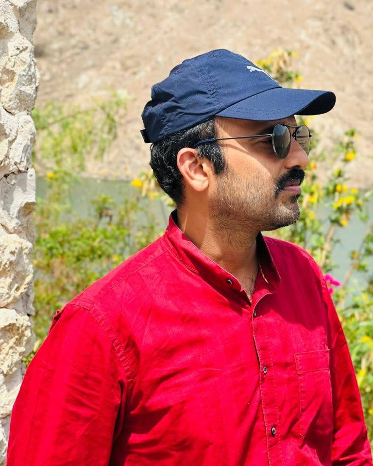

Dr. Dileep P
I build software that makes decisions from noisy data, and I like to check that it is right before I trust it.
My PhD at IIT Guwahati taught small neural networks to recognise radio signals. These days I write the tools I use to test and run rule-based trading ideas, and on the side I made an online table for 56, a card game from Kerala.

Research
Teaching a receiver to tell, from a short burst of samples, how a radio signal was modulated.
Work
Backtesting, monitoring and automation software for options trading, built and run by me.
Kerala 56
An online table for the six and eight player card game, with computer players who bid like people do.